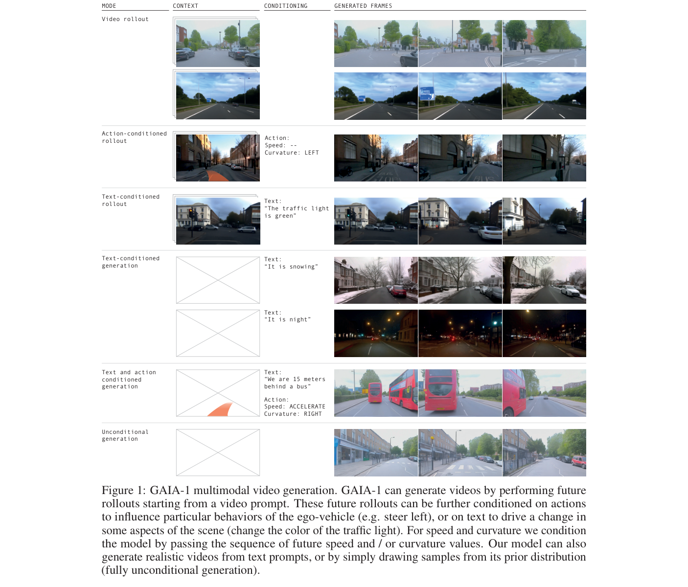
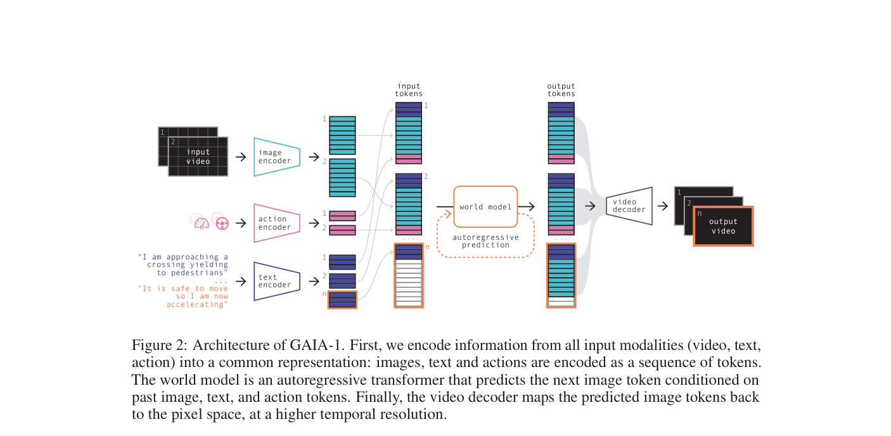
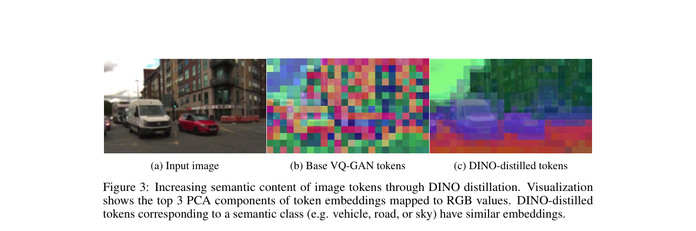

GAIA-1: A Generative World Model for Autonomous Driving
GAIA-1 将视频、文本和动作都编码为 token，用自回归 Transformer 预测未来视觉 token，并通过扩散解码生成可控驾驶视频，从而形成可按动作和文本条件 rollout 的驾驶世界模型。
world model、autoregressive transformer、video tokens、action conditioning、text conditioning、diffusion decoder、Wayve、neural simulation
Generative world model / video-text-action autoregressive model
否，技术报告与演示公开，完整数据/代码未公开
高：世界模型主线代表，适合作为 DriveDreamer/Drive-WM 对照
计划公网链接：https://ixgnozeix.github.io/paper-reports/report/gaia-1/
1. 论文速览
GAIA-1 是自动驾驶世界模型中的标志性技术报告。它把真实驾驶视频、ego action 和文本描述映射到共同 token 空间，使用 GPT-like autoregressive transformer 预测下一 token，再通过视频 decoder 生成未来帧。模型能从视频 prompt rollout 多种未来，并用 action 控制 ego 行为、用 text 修改天气/场景属性。论文强调 emergent properties：高层结构、场景动态、上下文意识、几何理解和可控生成；但它主要展示生成能力，而不是闭环规划指标。
2. 研究问题与动机
真实道路未来具有多模态不确定性，纯监督 planner 很难覆盖所有可发生后果。世界模型的理想作用是在行动前模拟“如果我转向/减速会发生什么”。GAIA-1 选择 tokenized autoregressive modeling，是因为它能像语言模型一样在长序列上建模视频、动作和文本条件，利用大规模无标注驾驶视频学习世界动态。
4. 方法详解
模型分三层：第一，视频 tokenizer 把图像帧离散成 image tokens，并通过 DINO distillation 增强 token 语义一致性；第二，text/action encoder 把文本与控制量映射到共享 embedding；第三，自回归 world model 预测未来 image tokens。解码阶段使用 video diffusion decoder，根据预测 token 和上下文生成高分辨率视频。训练目标本质是无监督序列建模，使用大规模真实英国城市驾驶数据。
5. 实验与结果
论文主要通过定性 rollout、action/text controllability、token 语义可视化和 decoder 任务展示能力。Figure 3 显示 DINO distillation 后同类语义区域 token embedding 更一致；Figure 4 展示 decoder 支持未来预测、插值和修复等训练任务。证据能说明模型学到一定场景结构和可控生成，但不能证明生成视频可直接用于安全规划；也缺少 nuScenes/CARLA 类可复现 open-loop/closed-loop 指标。
6. 复现要点
完整复现需要大规模真实驾驶视频、动作日志、文本条件、image tokenizer、AR transformer 和 diffusion decoder，成本极高。学术最小复现可在 nuScenes/BBD100K 上做小规模 tokenized video prediction：先训练 VQ tokenizer，再训练 action-conditioned transformer，最后用轻量 decoder 重建帧。阻塞点是数据规模、tokenizer 质量、长视频训练稳定性和生成评估指标。验收标准应是 FVD/FID、action controllability 和多未来一致性，而不是只看单张漂亮图。
7. 分析、局限与边界
GAIA-1 的价值是提出“驾驶世界模型可以像 GPT 一样扩展”的想象空间。它的边界是非常清楚的：生成 plausible video 不等于物理正确，不等于可验证安全，更不等于闭环驾驶策略。后续研究需要把世界模型与 planner reward、occupancy/BEV 结构和安全验证结合，Drive-WM、DriveDreamer、OccWorld 都是在不同表示空间中沿这个方向前进。
8. 组会问答准备
A：离散 token 使视频、文本、动作可以放入统一自回归序列，借用 GPT 式下一 token 预测。
A：它允许同一视频 prompt 在不同 ego action 下 rollout 不同未来，形成可控模拟。
A：它让 image tokens 更有语义一致性，同类区域 embedding 更接近，利于 world model 学结构。
A：论文主要展示生成和可控性，没有充分给出现有 planner 上的安全提升指标。
A：大规模真实驾驶视频和训练成本，以及高质量 tokenizer/decoder 的联合工程。
9. 补充图解与附录证据



我的阅读笔记
GAIA-1 适合作为世界模型总纲：tokenized AR + diffusion decoder。与 Drive-WM/DriveDreamer/OccWorld 对比时应强调表示差异：像素视频、结构条件、多视角、3D occupancy。